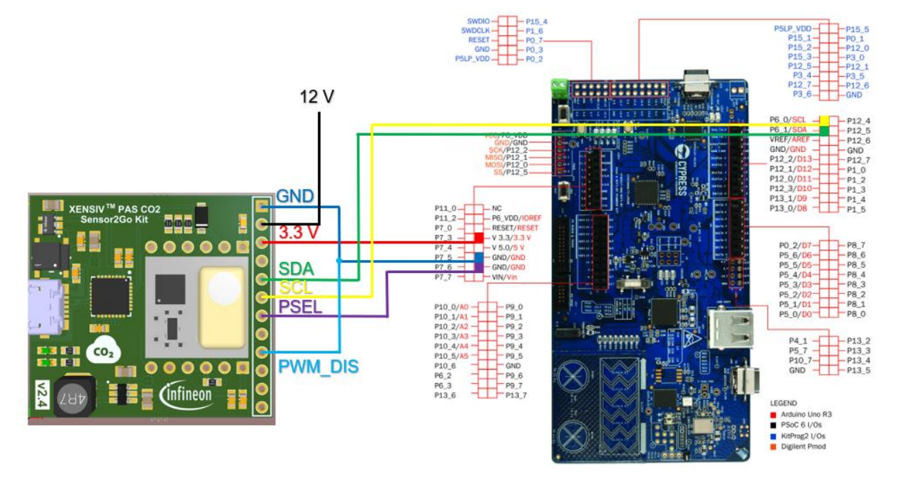

Overview
This library provides functions for interfacing with the XENSIV™ PAS CO2 sensor.
The sensor features a small form factor with accurate and robust performance at ppm level (±30 ppm ±3% of reading). The XENSIV™ PAS CO2 sensor integrates a photo-acoustic transducer and a microcontroller which runs ppm calculations as well as compensation and configuration algorithms on the PCB.
Quick start
For the hardware setup, check the "Quick start with the PSoC™ 6 Wi-Fi Bluetooth® pioneer kit" section of the Programming guide for XENSIV™ PAS CO2 sensor.


Figure 1. XENSIV™ PAS CO2 Sensor2Go kit I2C interface connection to the PSoC™ 6 Wi-Fi Bluetooth® pioneer kit
Do the following to create a simple application which outputs the CO2 ppm data from the sensor to the UART.
- Create an empty PSoC™ 6 application.
- Add this library to the application.
- Add the retarget-io library using the library manager.
- Place the following code in the main.c file.
- Define I2C SDA and SCL as appropriate for your hardware configuration:
- Build the application and program the kit.
#include "cyhal.h"
#include "cybsp.h"
#include "cy_retarget_io.h"
#include "xensiv_pasco2_mtb.h"
#define PIN_XENSIV_PASCO2_I2C_SDA NC
#define PIN_XENSIV_PASCO2_I2C_SCL NC
#define I2C_MASTER_FREQUENCY (100000U)
#define WAIT_SENSOR_RDY_MS (2000)
#define DEFAULT_PRESSURE_REF_HPA (0x3F7)
static cyhal_i2c_t cyhal_i2c;
void main(void)
{
cy_rslt_t result = CY_RSLT_SUCCESS;
result = cybsp_init();
CY_ASSERT(result == CY_RSLT_SUCCESS);
__enable_irq();
result = cy_retarget_io_init(CYBSP_DEBUG_UART_TX, CYBSP_DEBUG_UART_RX, CY_RETARGET_IO_BAUDRATE);
CY_ASSERT(result == CY_RSLT_SUCCESS);
printf("XENSIV PAS CO2 Example\r\n");
cyhal_i2c_cfg_t i2c_master_config = {CYHAL_I2C_MODE_MASTER,
0,
I2C_MASTER_FREQUENCY};
result = cyhal_i2c_init(&cyhal_i2c, PIN_XENSIV_PASCO2_I2C_SDA, PIN_XENSIV_PASCO2_I2C_SCL, NULL);
CY_ASSERT(result == CY_RSLT_SUCCESS);
result = cyhal_i2c_configure(&cyhal_i2c, &i2c_master_config);
CY_ASSERT(result == CY_RSLT_SUCCESS);
cyhal_system_delay_ms(WAIT_SENSOR_RDY_MS);
if (result != CY_RSLT_SUCCESS)
{
printf("PAS CO2 device initialization error");
CY_ASSERT(0);
}
for (;;)
{
if (result == CY_RSLT_SUCCESS)
{
printf("CO2 %d ppm.\n", ppm);
}
cyhal_system_delay_ms(10);
}
}
Use the library in your own platform
The library can be used in your own platform by copying three files to your project, i.e., xensiv_pasco2.c, xensiv_pasco2.h and xensiv_pasco2_regs.h.
The library depends on platform-specific implementation of the following functions:
The library provides default implementation of these functions. The default implementations should be overridden when using the driver in a target platform. See the implementation for the platform-specific functions in xensiv_pasco2_mtb.c using the PSoC™ 6 HAL.
More information
© Infineon Technologies AG, 2021.